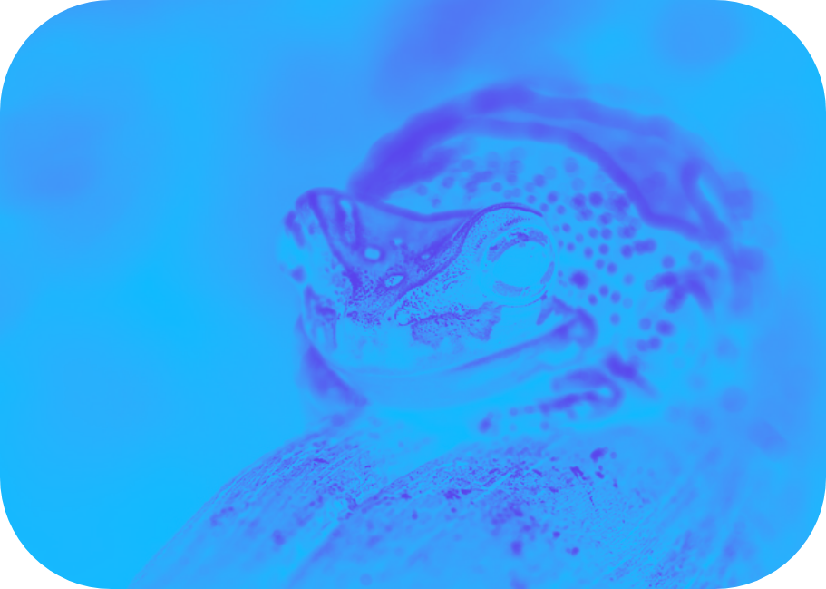

VÅDE FRØER


Der er mange forskellige frøer og de er alle lige dejlige, men her er det delt op i de to vigtigste grupper
ti l b a g e
TØRRE FRØER

Der er mange forskellige frøer og de er alle lige dejlige, men her er det delt op i de to vigtigste grupper
ti l b a g e